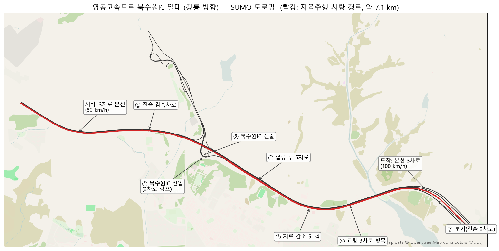
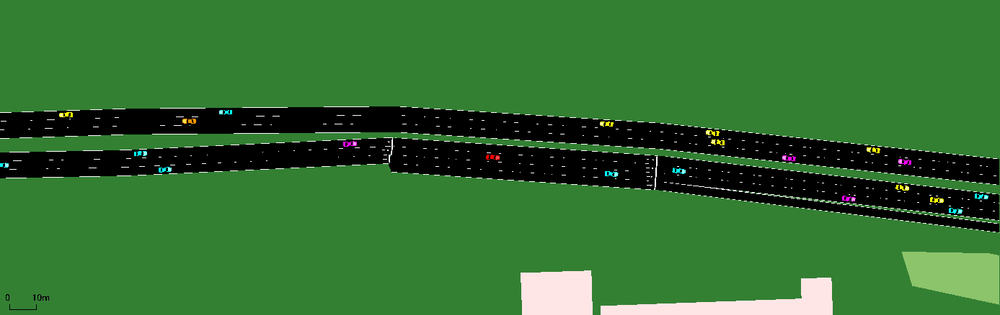
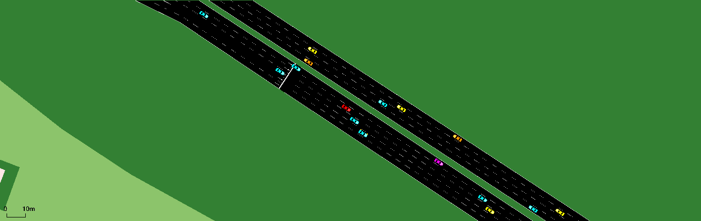
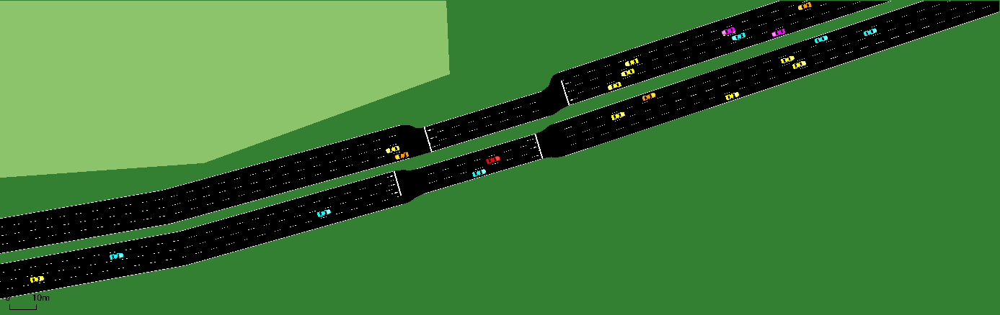
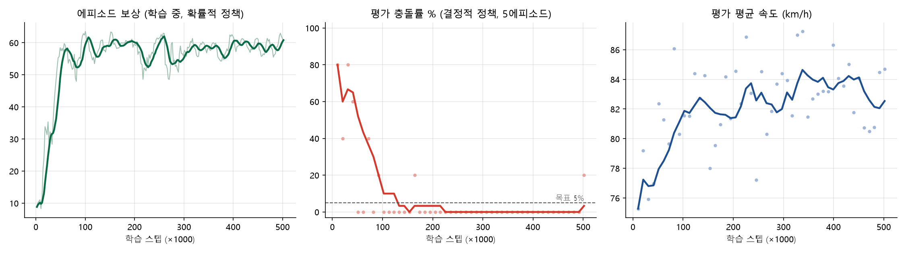

도로: 7.1 km 안에 고속도로의 거의 모든 상황
대한민국 실제 도로를 본뜬다는 과제 조건에 맞춰, 손으로 그린 도로 대신 OSM 데이터를 그대로 변환했습니다. 차로 수·제한속도·램프 형상이 지도 원본을 따르며, 자율주행 차량(빨강)은 아래 순서대로 구조를 만납니다.




일반 차량: 4종 운전자, 9개 경로, 시간당 4,800대
운전자 모델 믹스
| 모델 | 비율 | 성격 | 희망속도 |
|---|---|---|---|
| Krauss | 35% | 산만한 인간 | 0.85×제한 |
| IDM | 30% | 부드러운 표준 | 0.92× |
| EIDM | 20% | 반응 지연 | 0.95× |
| ACC | 15% | 크루즈 차량 | 1.00× |
합류·분기 도로에서는 경로를 따라가려면 차선변경이 필수이므로 SUMO LC2013 차선변경 모델(전략·협조·속도이득)을 켰습니다.
안정성 검증 (교통류만, 5시간 시뮬레이션)
자율주행 차량이 보는 것, 하는 것, 받는 것
관측 ot · 31차원
내 속도, 좌2·좌1·현재·우1·우2 차선의 앞/뒤 차량 상대거리·속도, 차선별 밀도, 그리고 경로 기준 차선 연결성: 200 m 안에 지금 차선이 끝나거나 진출로로 갈라지는지.
행동 at · 연속 + 이산
가감속 ∈ [−1, 1] (±5.4 m/s²)과 차선변경 {좌, 유지, 우}. 구간 제한속도(80/100 km/h)를 넘지 못하며, 측면 간격이 부족한 차선변경은 안전 게이트가 막습니다.
보상 rt
+0.1·v/제한속도 −0.1 근접<6m
−0.05 막힘
−5 충돌·경로이탈 +2 완주
“경로 이탈”은 끝나는 차선(차로 감소·진출 전용)에서 빠져나오지 못하고 차선 끝에 닿은 경우입니다. 실제 도로라면 정지·사고이므로 충돌과 같게 처리했습니다.
결과: 평가 100회 주행
| 정책 | 충돌 | 경로이탈 | 완주 | 평균속도 | 통과시간 | 차선변경/회 |
|---|

해석
주행 데이터셋
학습된 정책으로 주행하며 (o, a, r, o′, done)과 주변 150 m 차량의 privileged state를 저장했습니다. 오프라인 강화학습·모방학습에 바로 쓸 수 있는 NPZ와 전체 기록 JSONL 두 형식입니다.
HuggingFace: 업로드 후 링크 추가
재현 방법
pip install -r requirements.txt # + SUMO 1.27 설치 (SUMO_HOME) pip install libsumo==1.27.1 # 선택: 학습 약 4배 가속 python view_road.py # 도로 확인 (GUI) python train.py # PPO 학습 → results/team14_ppo_v1/ python tools/evaluate.py --model results/team14_ppo_v1/model.pt --episodes 100 python collect_pomdp_data.py --model results/team14_ppo_v1/model.pt --episodes 200 python test.py results/team14_ppo_v1/model.pt # GUI 재생